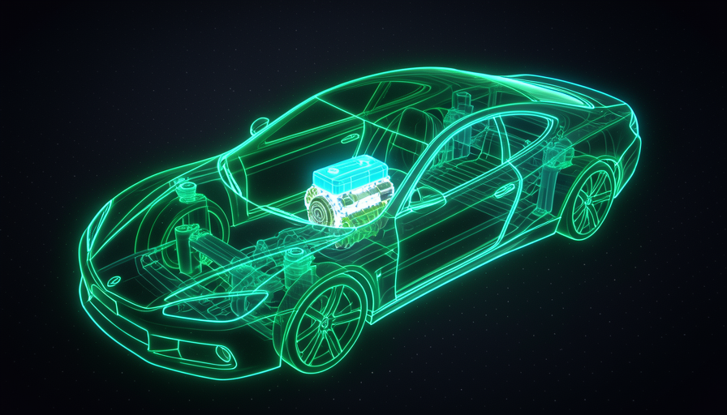
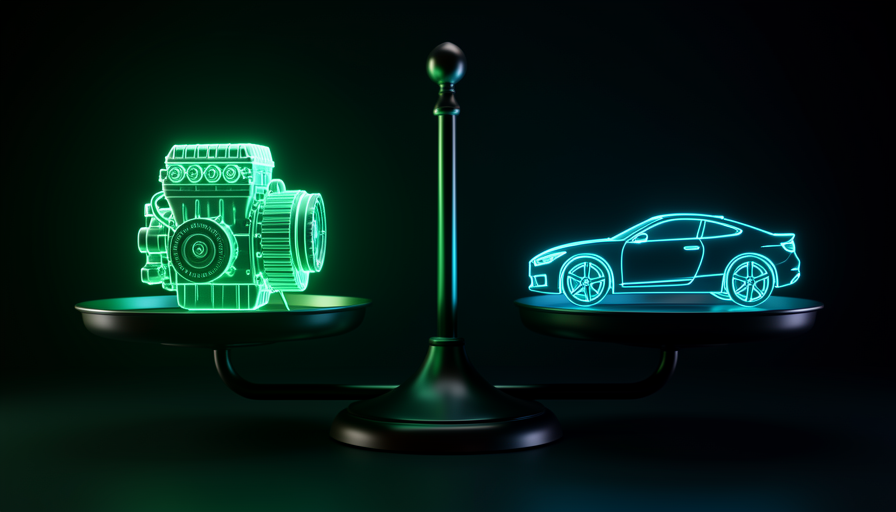

📖 Glossário vivo (leia antes — volte sempre que precisar)
Como esta é a trilha de Fundamentos, aqui todo termo é explicado em linguagem simples. Nas próximas trilhas a gente só usa — então fixe estes:
⚙️ O que é o harness
🧠 Imagine assim: você contratou um motorista de corrida genial. Ele dirige melhor que qualquer um. Mas ele ganha a corrida sozinho? Não — depende do carro, do mapa, das ferramentas no box. Com IA é igual: a IA é o motorista; o resto do carro é o que você monta.
Quando se fala em "usar IA pra programar", quase todo mundo pensa só no modelo — a IA propriamente dita, um modelo de linguagem (LLM) como o Claude ou o GPT. Mas o modelo é só uma peça. Tudo o que você coloca em volta dele tem um nome: harness (lê-se "ârnes"; em inglês é o arreio/chassi que segura tudo).
O harness são quatro coisas que você controla: (1) os prompts que você escreve; (2) as skills que você dá pro agente; (3) o ambiente (as ferramentas e permissões que ele tem); e (4) o codebase onde ele mexe. Nas palavras do próprio Matt Pocock: "o modelo é útil, mas o harness tem uma quantidade igual de trabalho — e você tem muito mais controle sobre o harness do que sobre o modelo."
O modelo (a IA) é a caixa que brilha. O harness é tudo ao redor — e é onde está o seu poder.

⚠️ Erro comum de iniciante
Achar que "melhorar a IA" = "trocar pra um modelo mais novo". Quase sempre, o que trava o resultado é o harness (um prompt vago, falta de uma skill, um codebase bagunçado) — não o modelo.
Em 1 frase: harness = o carro inteiro em volta do motor; o motor (a IA) é só uma peça.
Indo mais fundo (opcional): de onde vem a palavra "harness"?
Em inglês, harness é o arreio que prende e direciona a força de um cavalo — ou o chassi/estrutura que segura um sistema. Na comunidade de IA, virou o nome de tudo que "arreia" o modelo: o ambiente, as ferramentas e as instruções que transformam um modelo solto numa ferramenta útil e controlável.
🏎️ A analogia da Fórmula 1
🧠 Imagine assim: dois carros de Fórmula 1 com o mesmo motor. Um ganha, o outro fica em último. A diferença? Chassi, aerodinâmica, pneus, estratégia de box. O motor importa — mas é uma fração do que faz vencer.
Essa é a imagem central do método Pocock. Todo mundo é obcecado pelo motor (o modelo): "saiu um modelo novo, é melhor?". Mas pilotos e engenheiros de F1 sabem que o carro é um sistema. O motor sozinho não corta o ar, não segura a curva, não troca pneu na hora certa.
Traduzindo pro nosso mundo: trocar de modelo é trocar o motor. Pode dar um ganho — mas se o chassi (seu harness) é ruim, você não ganha a corrida. E tem um detalhe que muda tudo: você praticamente não controla o motor (quem treina o modelo é a OpenAI, a Anthropic…), mas controla o chassi quase 100%. Por isso o esforço inteligente vai pro chassi.
Recuperação rápida: na analogia, o que é o "chassi"?
Em 1 frase: o motor (modelo) é uma peça; o carro inteiro (harness) é o que vence a corrida.
🎛️ Por que você controla o harness
🧠 Imagine assim: você não pode trocar o cérebro do seu funcionário — mas pode dar a ele um manual melhor, ferramentas melhores e uma mesa organizada. O resultado dispara, e o "cérebro" é o mesmo.
O modelo é uma caixa-preta que você não treinou. Já o harness está inteiramente nas suas mãos — e tem três alavancas que você puxa hoje, sem esperar lançamento nenhum:
Pocock resume o porquê numa frase só: "você tem muito mais controle sobre o harness do que sobre o modelo." Vale a pena destrinchar o que isso significa na prática, porque é fácil concordar e mesmo assim não agir. Do lado do modelo, suas opções são pouquíssimas: escolher qual usar e talvez mexer em um ou outro ajuste fino. Você não decide como ele pensa, não corrige os vieses dele, não acelera o próximo lançamento — fica esperando. Do lado do harness, o cardápio é enorme e imediato: reescrever um prompt para deixá-lo específico, salvar uma skill com o padrão do seu projeto, conceder ou tirar uma ferramenta, renomear arquivos para a IA achar as coisas. Cada uma dessas mudanças cabe num único dia de trabalho e o efeito aparece na resposta seguinte — sem release, sem pedir nada a ninguém. É por isso que faz sentido despejar quase toda a sua atenção aqui: é o único lado em que mexer realmente muda o resultado.
🔬 Exemplo resolvido: mesma IA, dois resultados
Tarefa: "criar um endpoint de login". Mesmo modelo, dois harnesses:
Harness ruim
Prompt: "faz o login". Sem skill de padrões, sem testes, codebase bagunçado. → A IA inventa um padrão qualquer, quebra o resto, você gasta horas revisando.
Harness bom
Prompt claro + skill "padrões de auth do projeto" + testes existentes + codebase organizado. → A IA segue o padrão, roda os testes, entrega certo de primeira.
Em 1 frase: você não muda o cérebro da IA, mas muda o manual, as ferramentas e a mesa — e isso já decide o resultado.
⚠️ O erro de focar no modelo
🧠 Imagine assim: alguém que troca de carro toda semana atrás do "motor perfeito", mas nunca aprende a dirigir. Nunca vai ganhar corrida.
Pocock chama isso de "olhar pra coisa errada — o brinquedo novo e brilhante". O exemplo extremo é o vibe coder que pula de ferramenta em ferramenta (saiu modelo novo? troca; saiu app novo? troca) e nunca aprende fundamento nenhum. Fica sempre na superfície.
O problema prático: se você amarra tudo a um modelo específico, quando ele muda (ou aparece um mais barato) seu setup inteiro quebra. E pior — você não desenvolveu as habilidades que de verdade escalam. Foco no modelo é alugar; foco no harness é construir patrimônio.
✓ Pensar pelo harness
- • Aprender fundamentos que duram.
- • Melhorar o setup um pouco todo dia.
- • Usar o melhor modelo, sem depender só dele.
✗ Pensar pelo modelo
- • Trocar de ferramenta a cada hype.
- • Esperar a "AGI" resolver no seu lugar.
- • Nunca aprender o que está por baixo.
Em 1 frase: correr atrás do modelo é alugar; investir no harness é construir patrimônio.
⚖️ Modelo e harness são 50/50
🧠 Imagine assim: uma balança. De um lado o motor, do outro o chassi. A maioria acha que pesa 90% motor / 10% resto. Pocock equilibra: 50/50.
A maioria trata o modelo como 90% do resultado e a otimização do harness como 10%. Pocock vira a conta: pense em 50/50. O modelo importa de verdade — mas o harness tem peso igual, e é o lado que você controla. Consequência prática enorme: metade do seu resultado está em algo que você pode melhorar hoje. E tem um bônus: com um harness melhor, um modelo mais barato entrega o mesmo (você verá isso no módulo 1.5, "Economia de tokens").
Repare na assimetria que esse 50/50 esconde — é a frase de Pocock que vale ouro: "o modelo é útil, mas o harness tem uma quantidade igual de trabalho — e você tem muito mais controle sobre o harness do que sobre o modelo." Os dois lados pesam o mesmo, mas só um deles obedece a você. O motor é praticamente fixo: você não treina o Claude nem o GPT, não escolhe os dados deles, não muda como eles raciocinam por dentro. O chassi, ao contrário, você ajusta linha por linha — reescreve o prompt, salva uma skill, organiza um arquivo, libera ou bloqueia uma ferramenta. Então pense no esforço em termos de retorno: empurrar o lado do motor é quase empurrar parede (você só pode esperar a próxima versão); empurrar o lado do harness move a balança na hora. Por isso, quando metade do peso está sob seu controle direto e a outra metade está travada, o caminho racional é óbvio — investir onde a alavanca responde.
Um exemplo concreto pra fixar. Imagine que você pega a tarefa "refatorar este módulo de pagamentos" e a IA entrega algo confuso. A leitura "90% modelo" diz: "o modelo é fraco, vou esperar o próximo lançamento" — e você fica parado. A leitura 50/50 diz: "metade do problema é meu" — e aí você age: parte o pedido em passos menores, adiciona uma skill com os padrões de pagamento do projeto, aponta os testes que já existem, limpa o arquivo que estava virado um labirinto. O mesmo modelo, no mesmo dia, passa a entregar certo. Não foi o motor que mudou — foi o chassi. É exatamente esse o ponto: você não esperou ninguém; você puxou a metade que era sua.
📊 A conta que muda sua semana
Se o resultado é 50% modelo + 50% harness e você só controla o harness, então toda a sua margem de melhora vive de um lado só. O lado do modelo você espera; o lado do harness você trabalha. Quem pensa "90/10" desperdiça quase todo o esforço atrás dos 10% errados — e ainda fica refém do calendário de lançamento das labs. Quem pensa "50/50" gasta a energia onde ela rende: na metade que responde hoje.

Em 1 frase: metade do resultado está na sua mão — não terceirize essa metade.
🎯 Onde está sua alavanca
Fechando: toda vez que você for "melhorar a IA", traduza isso em melhorar o harness. Antes de culpar o modelo por um resultado ruim, rode o diagnóstico abaixo — é o resumo prático de tudo que vimos. Copie e cole quando travar:
Resultado ruim da IA? Antes de trocar de modelo, cheque o HARNESS: [ ] PROMPT — o pedido estava claro e específico? Dei contexto suficiente? [ ] SKILLS — faltou um procedimento/padrão salvo pra ela seguir? [ ] AMBIENTE — ela tinha as ferramentas e permissões certas? [ ] CODEBASE — o código é fácil de navegar e mudar, ou é um labirinto? Se 3+ falharam, o problema é o chassi — não o motor.
Em 1 frase: "melhorar a IA" quase sempre significa "afinar o harness" — comece por aí.
🧾 Resumo do Módulo
Próximo módulo:
1.2 — O Bitter Lesson: por que não adianta só "esperar o modelo melhorar".